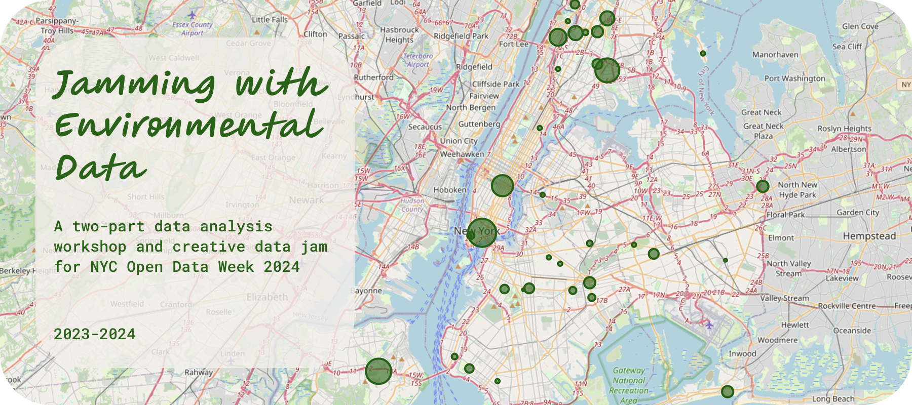
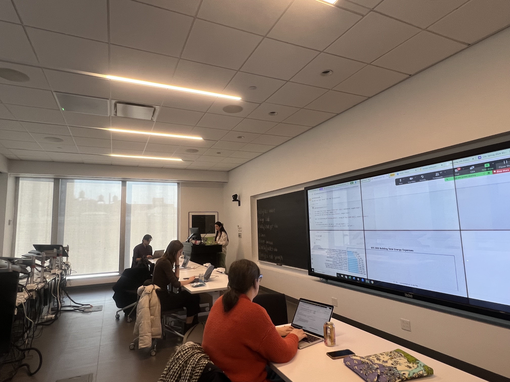

View projects in game design, data visualization, mobile applications, & more

Post-Baccalaureate Project:
Barnard College CSC x
NYC Open Data Week
Oct 2023 - Mar 2024
Kiley Matschke
Marko Krkeljas
View the full project documentation here.
NYC Open Data Week is an annual festival of community-driven events across all
five boroughs, organized and produced by the NYC Open Data Team at the Office of
Technology and Innovation (OTI), BetaNYC, and Data Through Design. This festival
recognizes the anniversary of NYC's first open data law, signed in March 2012, and serves
as a powerful reminder of our communities' interconnectedness.
My two-part workshop and data jam explores data analysis and visualization utilizing NYC
environmental data. In the first half of this workshop, participants conduct data analysis via Python
code in Google Colab, later to contrast them using ChatGPT’s data capabilities. In the second half,
participants work in small groups to ideate and produce creative, accessible projects that showcase their
data findings (i.e; in the form of collages, songs, stories, etc.). This workshop navigates the importance
of data presentations and their impact on viewer perceptions. Open to people from all backgrounds and
coding levels -- beginner friendly!
I developed this project iteratively, receiving feedback from colleagues and fellow ODW contributors along the way:

Alternatively, view the official recording on the NYC Open Data Week YouTube channel
here.
Special thanks to the NYC Open Data Team, BetaNYC,
Data Through Design, and my colleagues at Barnard College's
Computational Science Center.